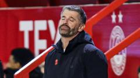

Host province drops two games to open Canadian mixed curling championship
The host province got off to a rocky start at the Canadian Mixed Curling Championship on Sunday.

The host province got off to a rocky start at the Canadian Mixed Curling Championship on Sunday.

Aberdeen sack head coach Stephen Robinson after dropping to second bottom of the Scottish Premiership.

Lucy Bronze is one of five England players named in the Fifpro Women's World 11.

Eve Gascon stopped all 11 shots she faced as Canada blanked Japan 9-0 at the women's hockey world championship in Herning, Denmark, on Sunday.
Watch every goal from across the WSL in matchweek nine, from a London City Lionesses first-half wonder goal to Khadija Shaw's first hat-trick of the Women's Super League season.
Watch the best of the action as Hibernian thrash Aberdeen 4-0 in what would proved to be Stephen Robinson's final match in charge.
Harry Wilson believes Wales can shock Norway again in Oslo on Saturday and move a step closer to survival in Nations League A.

Etwas Bestimmtes gesucht? Alle Meldungen durchsuchen.